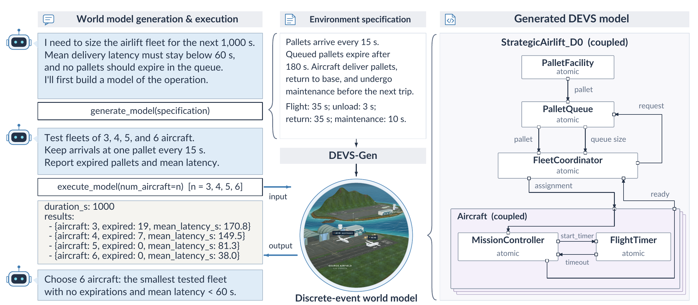
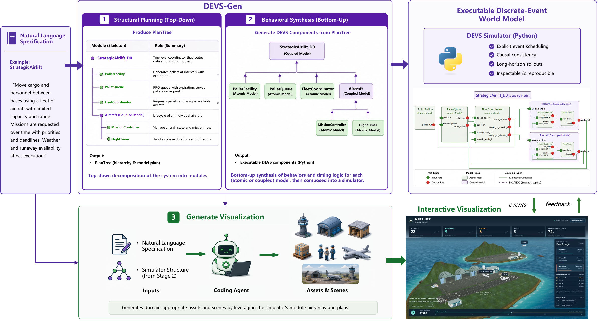
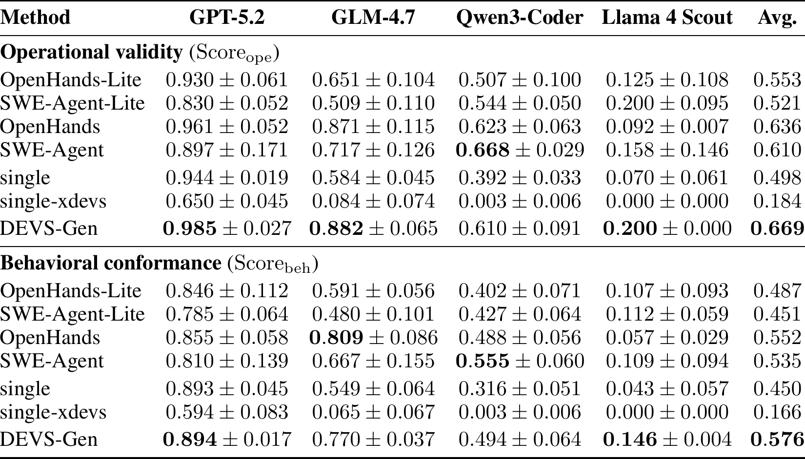
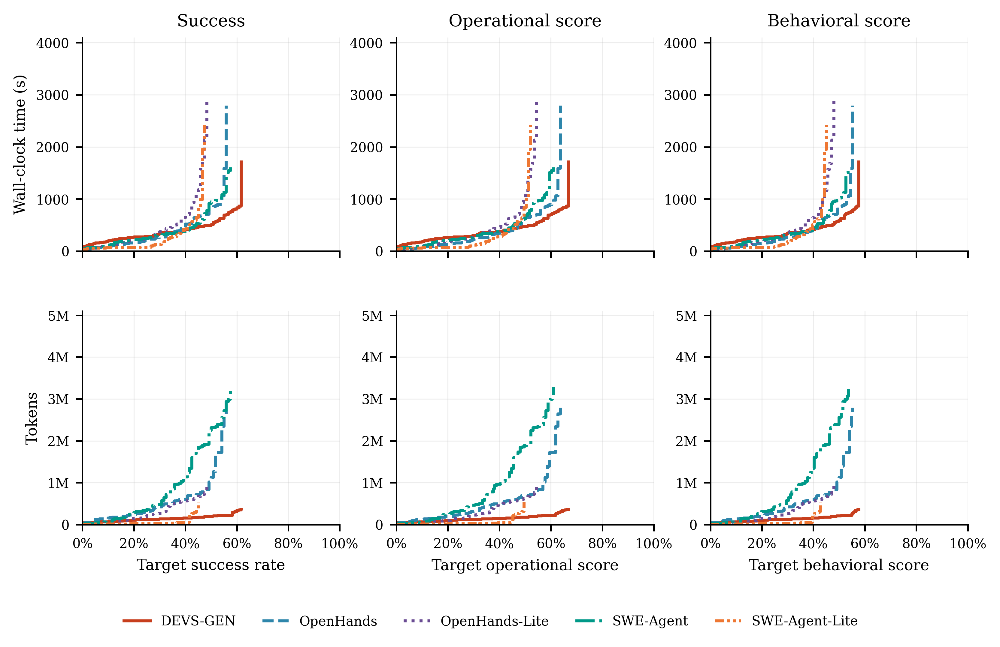

Specification to Simulator
Infer a modular simulator with explicit components and interfaces from natural-language requirements.
A discrete-event world-model framework for queues, deadlines, logistics, and other event-driven domains
DEVS-Gen turns a natural-language environment specification into a DEVS simulator with explicit components, interfaces, event logic, and timing. A trace-based benchmark checks the resulting simulator's operational validity and behavioral conformance, while the same model can support what-if analysis and event-driven visualization.
Infer a modular simulator with explicit components and interfaces from natural-language requirements.
Check emitted event traces against operational contracts and specification-derived behavioral requirements.
Run the simulator under alternative inputs or configurations and connect its event stream to downstream analysis or visualization.
A world model describes how an environment changes in response to actions. In operational domains such as supply chains and service systems, those changes depend on discrete events: arrivals trigger queues, service takes time, and concurrent activities compete for shared resources.
To compare possible actions in these environments, an agent needs an executable model that preserves event order, timing, and shared-resource constraints. The Discrete Event System Specification (DEVS) formalism provides explicit components, event transitions, and timing semantics for representing these interactions.
DEVS-Gen generates these simulators from natural-language specifications using DEVS. It plans the component hierarchy and port interfaces before synthesizing component behavior, so each component is implemented with its communication boundaries already specified.
The generated simulator is then executed on benchmark inputs, and its event traces are checked against the specification. Operational checks cover execution, I/O, and trace format. Behavioral checks cover component transitions, cross-component dependencies, and aggregate behavior.
The Strategic Airlift example keeps one environment model fixed while changing the number of aircraft. Executing each configuration exposes queue expiration and delivery latency, allowing an agent to choose the smallest tested fleet that satisfies the stated constraints.

DEVS-Gen constructs the simulator once. The agent then evaluates fleet sizes of 3, 4, 5, and 6 aircraft over the same 1,000-second scenario using expiration counts and delivery latency measures.
DEVS-Gen separates structural planning from component synthesis. Strategic Airlift illustrates the resulting hierarchy, execution, and trace-driven visualization.

Structural planning specifies the model hierarchy and interfaces; behavioral synthesis implements and assembles the components. The generated simulator emits events that can drive a visualization frontend. The physics-engine coupling shown in the figure is a proposed extension.
Construct a PlanTree, a hierarchy in which each node has a ModelPlan specifying its responsibilities, port interfaces, and coupling relationships before implementation begins.
Generate atomic components that implement local state transitions, timing, and trace emission. Assemble coupled components bottom-up, reconciling their interfaces with the generated child components.
Run the generated simulator through its external interface and use the emitted trace for evaluation, what-if analysis, or downstream visualization.
The examples are hidden.
The tabs below present recorded generation-and-evaluation artifacts for Strategic Airlift and downstream-use demonstrations for ICU and Wet-Lab. Select components and expand details to inspect the saved plans, code, and traces.
Strategic Airlift is the running example in the paper. It models pallet arrivals, queue expiration, aircraft assignment, flight phases, delivery, return, and maintenance; its tab also shows how the event stream drives a 3D scene.
The benchmark evaluates simulator generation across ten scenarios, four model backbones, and both execution-enabled and execution-disabled comparison methods.
Each task is a self-contained evaluation package with a specification that states the execution interface and scored behavioral requirements, test inputs, and a checker that scores observable traces rather than source-code similarity.
Measures whether the generated simulator successfully runs, follows the required I/O contract, and emits valid trace logs.
Averages the micro-level consistency and macro-level causality scores, giving the two categories equal weight. A test case that fails operational checks receives a behavioral score of zero.
The ten benchmark scenarios span service and banking workflows, network protocols, transport and logistics, access control, thermal control, and epidemic modeling.
Click either result figure to open it at full resolution.

Mean scores across ten scenarios. For each backbone, scores are first averaged across scenarios within each repetition; the table reports the mean and sample standard deviation across three repetitions. Avg. is the mean across the four backbones.

Resource-versus-outcome curves for generation completion, operational validity, and behavioral conformance. The top row reports generation time and the bottom row token use.
xdevs.py-based simulator, DEVS-Gen outperforms a single LLM call that generates the entire simulator directly on both scores for every backbone.
The release contains DEVS-Gen, four baseline configurations, two direct-generation controls, the ten benchmark packages, generated programs, evaluation records, and plotting scripts. Generation is launched through src/generation/run_generation.py; evaluation uses devs_eval.cli.
Run the commands below on Linux or WSL with Python 3.10 available. Create an isolated environment and add your model-provider API key to .env. Re-evaluating the bundled programs requires no API key.
git clone https://github.com/czyarl/devs_gen_code.git
cd devs_gen_code
python3.10 -m venv .venvs/devs-gen
.venvs/devs-gen/bin/python -m pip install -r envs/devs_gen.txt
.venvs/devs-gen/bin/python -m pip install . src/third_party/xdevspy simpy==4.1.1
cp .env.example .env
# Add the API key for the model provider used during generation.The example below generates a Strategic Airlift simulator. Replace MODEL_ID with a model ID accepted by your provider, such as openai/gpt-5.2 for the OpenAI API. The runner reports the generated project directory; use that directory in the evaluation command.
cd src/generation
../../.venvs/devs-gen/bin/python run_generation.py \
--framework devs_gen \
--model MODEL_ID \
--benchmark SA \
--workspace /tmp/devs_sa_generation
cd ../..The evaluator needs unshare, bwrap, prlimit, and working Linux user and network namespaces. On Debian or Ubuntu, these tools are provided by util-linux and bubblewrap. Validate the scenario manifest, then evaluate the generated project using the directory reported above. Choose a new output directory for each run.
.venvs/devs-gen/bin/python -m devs_eval.cli validate-manifest benchmark/SA/manifest.json
.venvs/devs-gen/bin/python -m devs_eval.cli run-scenario \
--manifest benchmark/SA/manifest.json \
--simulator-directory /path/to/generated/project \
--output-directory /tmp/devs_sa_evalFor the experiment setup, including baseline agents, benchmark assets, and configuration, see the GitHub repository linked above.
@misc{chen2026specificationdrivengenerationevaluationdiscreteevent,
title={Specification-Driven Generation and Evaluation of Discrete-Event World Models via the DEVS Formalism},
author={Zheyu Chen and Huiteng Zhuang and Zhuohuan Li and Chuanhao Li},
year={2026},
eprint={2603.03784},
archivePrefix={arXiv},
primaryClass={cs.AI},
url={https://arxiv.org/abs/2603.03784},
}